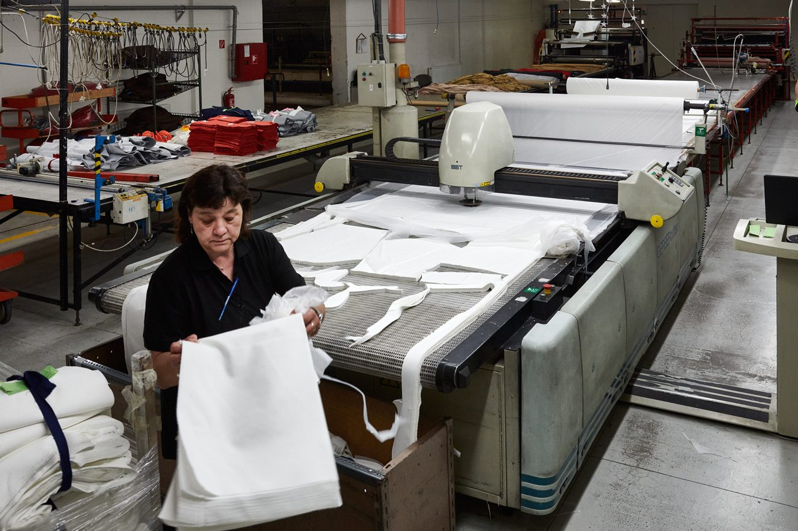

We combine in-house teams with trusted partner factories in a modular system that flexes to your volumes and scales for surge demand — without sacrificing quality or quick response.
We take it all on — sourcing the material, developing the design and creating the complete garment, then delivering it to you finished and inspected. Ideal when you want a single partner from concept to delivery.
You supply the materials; we cut, make and trim to your specification with precision and speed. Ideal when you control your own fabric supply.
Manufacture from your specification, or let us help develop the design and technical pack.
Long-standing supplier partnerships and access to the best materials and trims.
Production-ready patterns and grading, prepared in-house.
Precise, efficient and repeatable cutting for consistent quality at volume.
All forms of sewing, high-frequency & ultrasonic welding and taped seams, plus embroidery — modular lines at our facility and trusted outsourcers.
Inspected to EN ISO 9001 with full traceability through our SAP ERP system.
Finished, packed and labelled exactly to your requirements.
Logistics, customs and duty handled — quick response, delivered anywhere.
Modular manufacturing lets teams scale individually or together, so we deliver large volumes while keeping our status as Europe’s quick-response supplier. We back our own first-class facility with trusted outsourcers for surge capacity.

Certified processes (ISO 9001 & 14001), in-house inspection, and end-to-end traceability through our SAP ERP system. We manufacture under our own certifications and can be audited to your specific requirements — including certification and testing where you need it.
As an EU manufacturer there are no import duties within the single market, and our central location and excellent transport links mean quick response and reliable delivery — worldwide if needed.
Send your spec, volumes and timelines — we’ll come back with a clear quote and lead time.